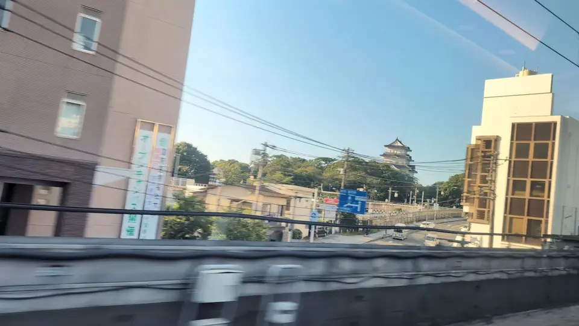

HOW TO LOOK
How to find them
- Seat A for Odawara, Seat E for most othersSeat letters refer to ordinary cars. Toward Tokyo the order reverses, but the seat side for each castle stays the same.
- Start close, then go distantKiyosu stands right by the tracks and makes a good first castle. Gifu and Hikone are distant, tiny even in clear air.
- For ruins, watch the hillSawayama and Kannonji have no keep. These views are of the hills and ridges where the castles once stood.
KEEPS
Look for the keep — five castles
From a keep beside the tracks to a tiny point on a summit, in order from Tokyo.

Odawara Castle
A white keep near the station
Watch Seat A near Odawara Station. A white keep appears beyond the buildings, briefly: start watching before you reach the station.

Kakegawa Castle
A brief glimpse on the hill
Near Kakegawa Station, look for the keep on a low hill on the Seat E side. From a Nozomi, the glimpse is brief; look for its layered roof.

Kiyosu Castle
White and vermilion by the tracks
Between Nagoya and Gifu-Hashima, Kiyosu Castle stands close to the Seat E side. Its white and vermilion keep and red bridge make this a good first castle to look for.

Gifu Castle
A tiny point on the summit
Between Gifu-Hashima and Maibara, Mount Kinka lies far away on the Seat E side. Gifu Castle is a tiny point on its summit: a difficult view best attempted in clear air.

Hikone Castle
A white keep beyond the town
Between Maibara and Kyoto, look for a small hill beyond the town. The keep is distant and very small. Use the photographs to locate the hill before trying to spot it.
CASTLE HILLS
Trace the hill — two castle ruins
The buildings are gone, but the hills where the castles stood still pass the window.

Sawayama Castle Ruins
From the sign to the castle hill
Between Maibara and Kyoto, a sign and hill mark Sawayama Castle Ruins on the Seat E side. No keep remains; the sign helps you identify the hill where the castle stood.

Kannonji Castle Ruins
The ridge is the castle view
Kannonji Castle Ruins lie between Maibara and Kyoto. This is a view of the Kinugasa ridge where the castle stood, rather than a keep. Watch the Seat E side for a large mountain just before Azuchi.
ANOTHER CASTLE-SHAPED VIEW
A castle-shaped landmark in Atami
On the Seat A side between Odawara and Atami, look for Atami Castle. It is a tourist attraction built in 1959, rather than a historic fortress. Look for its white silhouette among the sea and hills.

A CASTLE YOU CAN NO LONGER SEE
Nagoya Castle is no longer visible
Nagoya Castle once appeared between the buildings on the Seat E side, around Nagoya Station. A blog that has tracked castles from the train describes it just after a westbound train leaves Nagoya, near Noritake Garden: about 2.1 km away, and visible for less than a second.
A later note on the same article reports that the castle can no longer be seen from near Nagoya Station. In our own photograph from May 2026 below, the mall and other buildings now block the direction where it stood.

The blog account of Nagoya Castle from the window (Japanese) ↗
Look for them on your next ride
Choose your train for estimated passing times. Record the castles you spot in your Window Stamps to grow the Castle Hunter medal.
About this page
Every photograph here was taken from the Shinkansen window; reference views from other lines are not used.
Distant castles depend heavily on visibility, and the ruins have no keep. Guidance for Hikone is still being checked on upcoming rides.